So Many coding options
- NgRx
- NgRx Actions
- NgXs
- NgRx Data
- MobX
- ?
There is a lot to learn with NgRx
- Actions
- Reducers
- Effects
- Selectors
Do I even need NgRx?
- So much planning
- Is my application complex enough?
- I want to start simple
- But what if I want to upgrade later?
Architecture Goals
- Maximize Code Reuse
- Share data
- Stream data
- Reduce complexity
- Scalability
Core Concepts
- Container/Presenter
- Service with a Subject
Container Components
- Top level features/pages
- Contain child components
- Can contain other containers
What do Containers Do?
- Controls page flow
- Responsible for loading/saving data
- Handles all events from child components
Presentation Components
- Primary job - present data
- Make things pretty
- Know nothing about services/stores/etc
What do Presenters do?
- Defer, defer, defer
- Simple components
- Receive data via inputs
- Raise events to the parent container
What if my page is simple?
- Do it anyway
- Avoid subscriptions
- Async Pipe
- Consistency
- KISS
Container - Presentation

What is a service with a subject?
- Regular Service
- Has local variable
- Subject vs BehaviorSubject
What will we create?
- Dashboard Component
- Navbar with role control
- Users list presenter
- Permissions presenter
Let's get started...
Let's create a dashboard page
BrieBug - What We do
- Architecture Reviews
- Customized Training
- Angular Consulting
- Staff Augmentation
Jesse Sanders
@JesseS_BrieBug
jesse.sanders@briebug.com